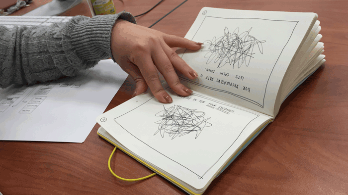
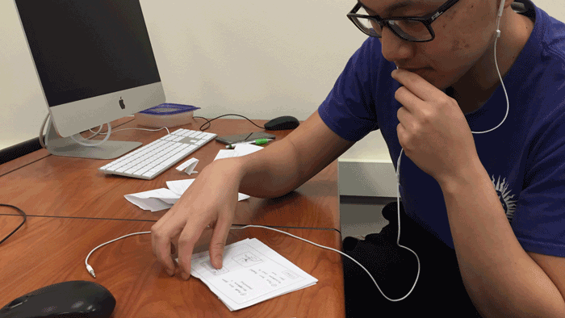
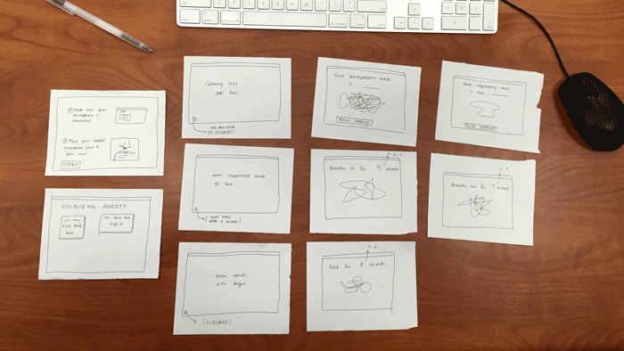

Prototyping my interface on paper has proven valuable in helping me understand the needs and expectations of my users. I created two paper prototypes and tested them on two individuals, who interacted with both the prototypes and the microphone headset crucial to the interface.
One key insight I gained during prototyping was the relationship between timers and anxiety. When Linda was interacting with my first paper prototype, she mentioned that someone experiencing anxiety would have a difficult time counting down. One second might feel much longer in their mind, and she suggested including a timer that counts down or a visual representation (i.e. circle or bar that fills up) of a timer instead. I incorporated this suggestion in my second prototype, where I noticed Brandon interacting with the breathing timer with ease.
Overall, paper prototyping allowed me to notice behaviors of my users that I wouldn't have been able to predict myself, and Linda and Brandon both provided valuable suggestions to my project.
